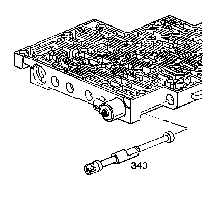
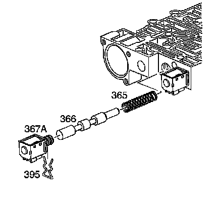
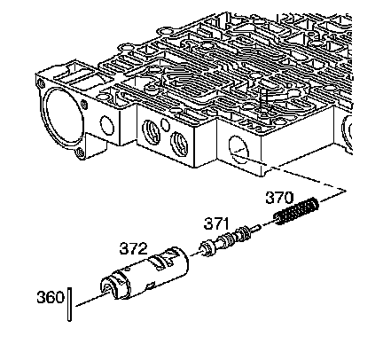
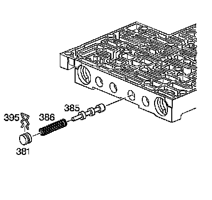
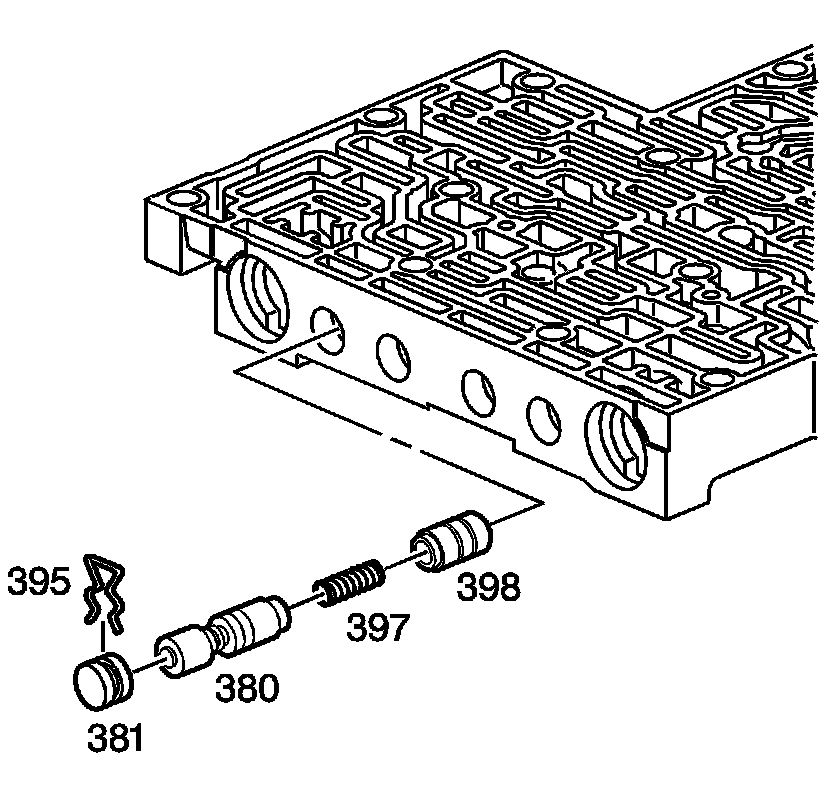

Control Valve Body Disassemble
Control Valve Body Disassemble

Caution: Refer to Valve Springs Can Be Tightly Compressed Caution.
1. Remove the manual valve (340).

2. Remove the forward accumulator cover bolts (364) and the forward accumulator cover (363).
3. Remove the forward accumulator spring (356), forward accumulator piston (354), and the forward accumulator pin (355).
4. Remove the low overrun valve spring (362) and the low overrun valve (361).
5. Remove the coiled spring pin (360) and the bore plug (359).
6. Remove the forward abuse valve spring (358) and the forward abuse valve (357).

7. Remove the solenoid retainer (395) and the 1-2 shift solenoid (367A).
8. Remove the 1-2 shift valve (366) and the 1-2 shift valve spring (365).

9. Remove the solenoid retainer (395) and the 2-3 shift solenoid (367B).
10. Remove the 2-3 shuttle valve (369) and the 2-3 shift valve (368).

11. Remove the coiled spring pin (360).
12. Remove the 1-2 accumulator valve sleeve (372).
13. Remove the 1-2 accumulator valve (371) and the 1-2 accumulator valve spring (370).

14. Remove the solenoid retainer bolt (364A) and the solenoid retainer (378). Remove the pressure control solenoid (377), note orientation upon removal.
Caution: Refer to Valve Springs Can Be Tightly Compressed Caution.
15. Compress the actuator feed limit valve spring (375).
16. Remove the bore plug retainer (395) and release the spring slowly.
17. Remove the bore plug (376).
18. Remove the actuator feed limit valve spring (375) and the actuator feed limit valve (374).

19. Remove the solenoid retainer (395) and the 3-2 control solenoid (394).
20. Remove the 3-2 control valve (391) and the 3-2 control valve spring (392).

Caution: Refer to Valve Springs Can Be Tightly Compressed Caution.
21. Remove the bore plug retainer (395) and the bore plug (381).
22. Remove the 3-2 downshift valve spring (390) and the 3-2 downshift valve (389).
23. Remove the coiled spring pin (360) and the bore plug (359).
24. Remove the reverse abuse valve spring (388) and the reverse abuse valve (387).

Caution: Refer to Valve Springs Can Be Tightly Compressed Caution.
25. Remove the bore plug retainer (395) and the bore plug (381).
26. Remove the 3-4 shift valve spring (386) and the 3-4 shift valve (385).

27. Remove the bore plug retainer (395) and the bore plug (381).
28. Remove the regulator apply valve (380) and the regulator apply spring (397) and the isolator valve (398).

29. Remove the bore plug retainer (395) and the bore plug (381).
30. Remove the 3-4 relay valve (384) and the 4-3 sequence valve (383) and the 4-3 sequence valve spring (382).